Taking your measurements
The form is pre-filled from the size chart below: it shows the main measurements, and the others are derived from them.
| French size | UK/US (chest, in) | Chest | Waist | Front waist length | Shoulder to wrist |
|---|---|---|---|---|---|
| 44 | 34 | 88 | 76 | 44.5 | 62 |
| 46 | 36 | 92 | 80 | 45 | 62 |
| 48 | 38 | 96 | 84 | 45.5 | 62.5 |
| 50 | 40 | 100 | 88 | 46 | 63 |
| 52 | 42 | 104 | 92 | 46.5 | 63.5 |
| 54 | 44 | 108 | 98 | 47 | 64 |
| 56 | 46 | 112 | 104 | 47.5 | 64 |
| 58 | 48 | 116 | 110 | 48 | 64.5 |
| 60 | 50 | 120 | 116 | 48.5 | 65 |
| 62 | 52 | 124 | 122 | 49 | 65.5 |
Average height. For short and tall heights, only the lengths change. Size numbers are French sizes; the measurements follow the European clothing size standard grid. UK and US equivalents are approximate and vary between brands.
These standard sizes describe an average figure, and few people match it exactly. You can therefore correct each measurement: the more you correct, the more made-to-measure the jacket will be.
You need a tape measure, if possible the help of another person, and about 10 minutes. The measurements marked “check” are the most important.
For men
Eleven measurements are enough. Take them on yourself or on the person concerned, in underwear or very thin clothing, with the tape flat against the body, not tight.
Check first: chest, waist, front waist length, shoulder to wrist.
How to take your measurements
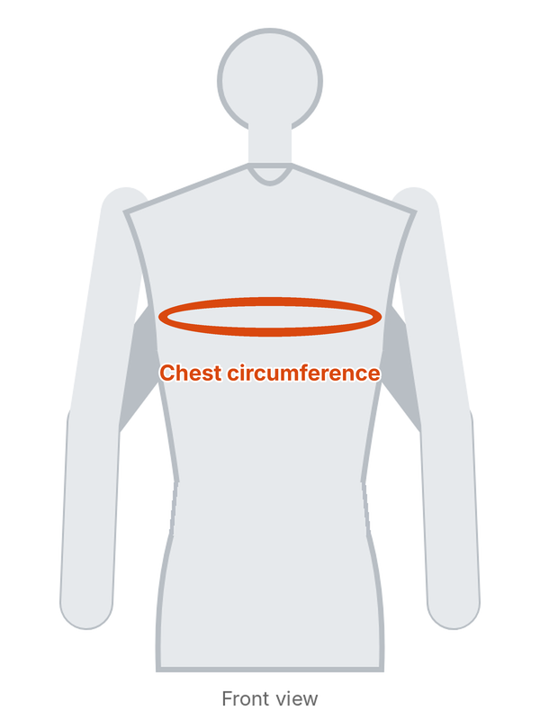
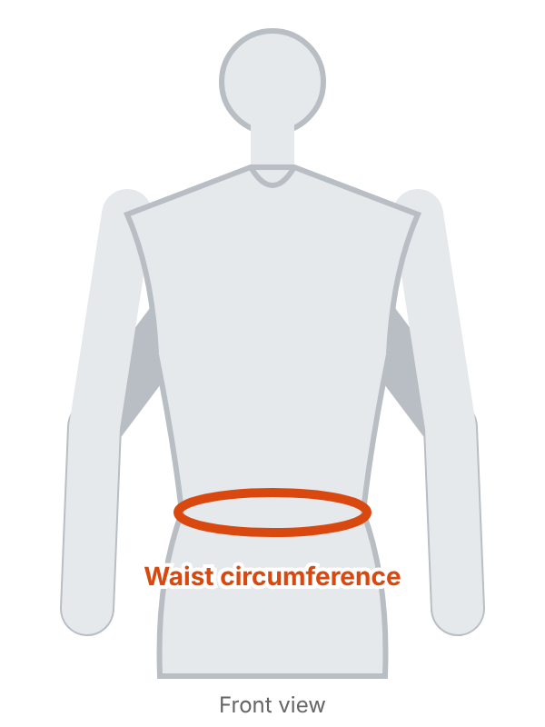
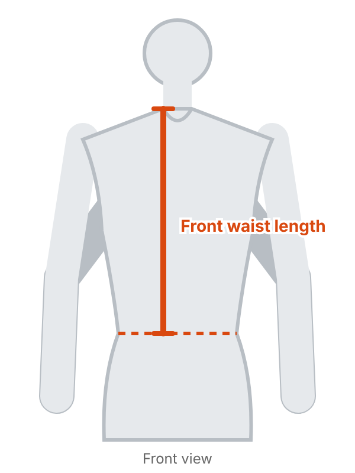
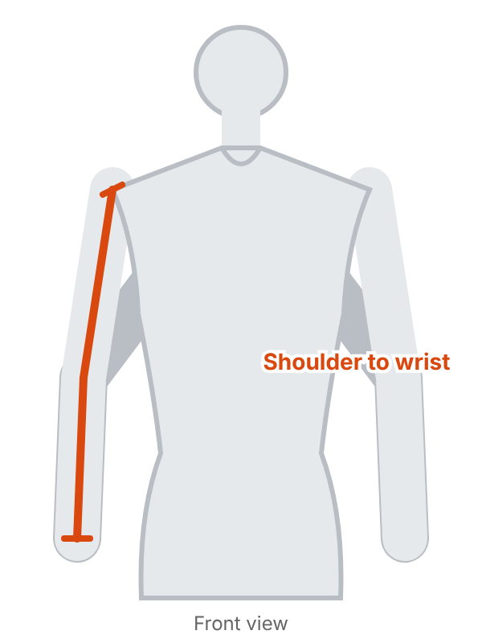
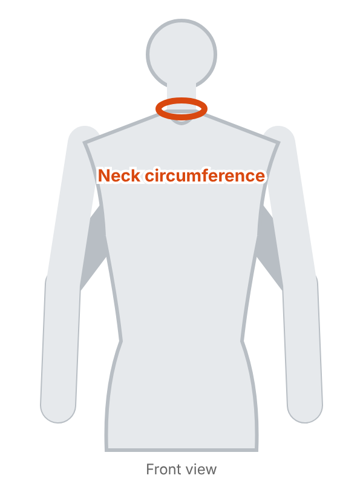
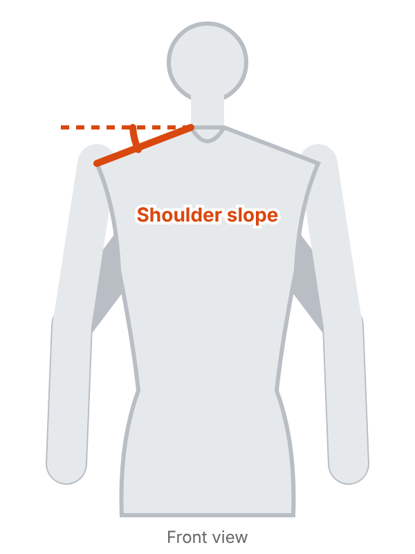
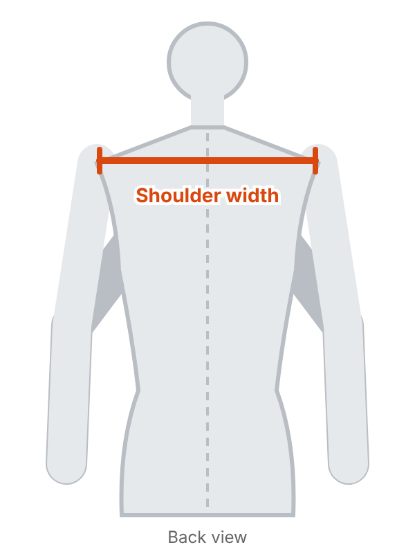
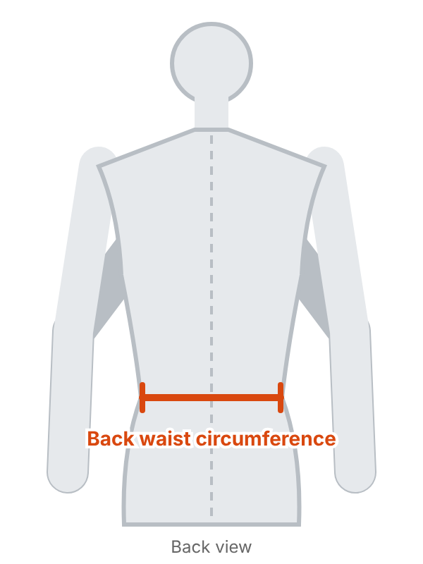
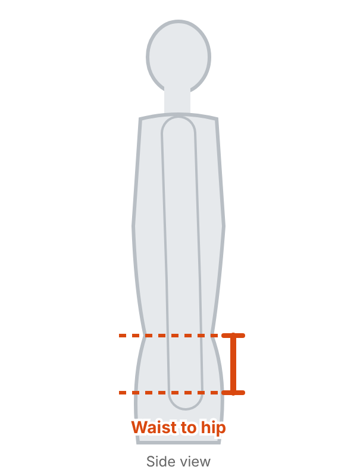
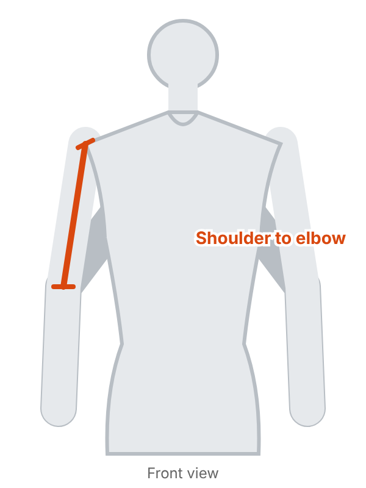
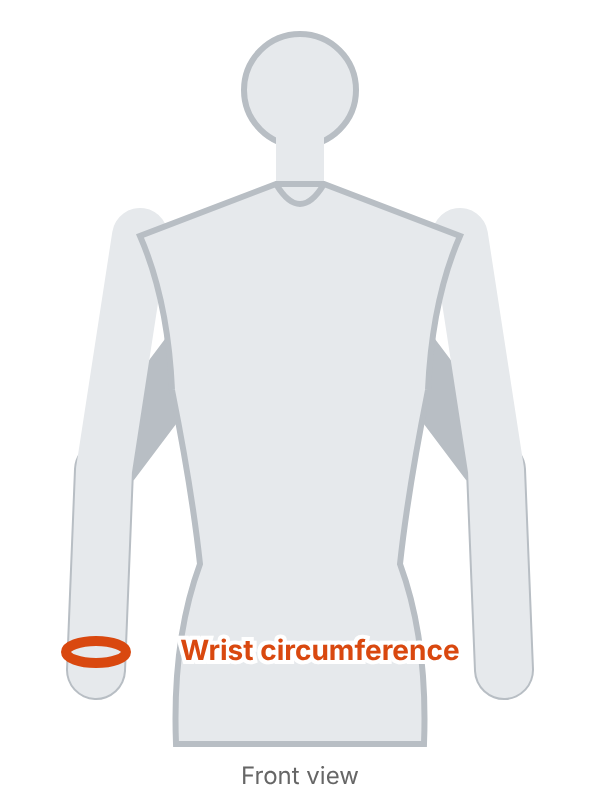